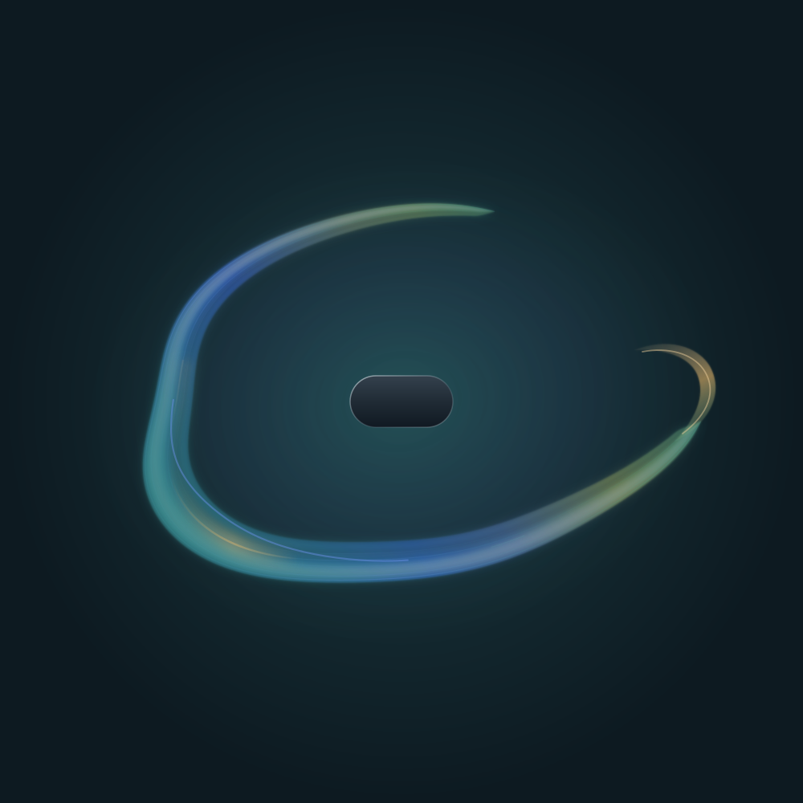
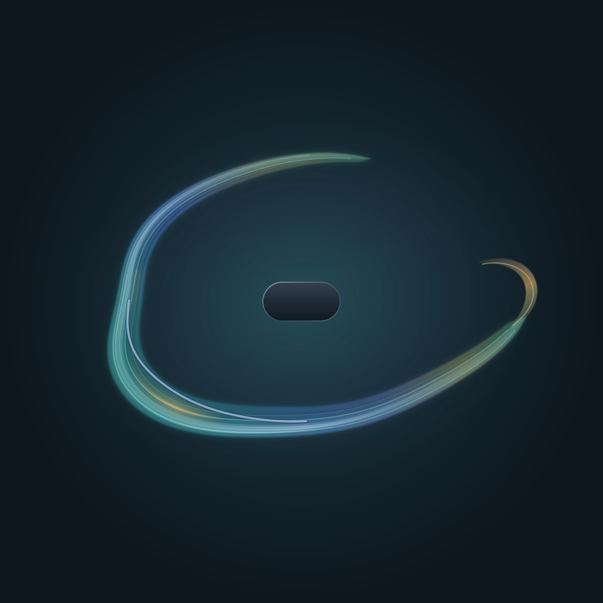

Conversations / 003
Zero Hour
A trivia question about a launch night in 2005. The second answer turned out to be the person asking.


- Model
- Claude, in Claude. The transcript doesn’t record which model.
- Field
- The skill installed in Claude at the time: grammar v4, synthesis 3.2, and most likely rendering 4.1 (commit
0f2dbc5, released that afternoon). The first v4 renderer came out 13 minutes earlier and draws nearly the same shape. The amber curl was drawn by hand after rendering. - Update
- The same controls on Field 4.6.0 (rendering 4.4), shown below.
- Date
- 21 September 2026
-
The question
EdgarWho was the first person to buy an Xbox 360 in the United States?
ClaudeNames the buyer usually credited: a Microsoft programmer who waited three days at the front of the line at a Best Buy in Bellevue, Washington, where Bill Gates handed over the first console at midnight. Then it qualifies the answer. He was the ceremonial first, not the literal one. Stores on the East Coast opened three hours earlier, and consoles were also on sale that night at Microsoft’s Zero Hour launch party in the Mojave Desert.
-
The follow-up
EdgarWho was the first at Zero Hour?
ClaudeFinds a 2005 report from the event. The first consoles there went to two contest finalists from Senatobia, Mississippi, who had driven more than thirty hours straight and miscalculated their way into arriving a day early. One of them was named Edgar Bounds. Because Zero Hour sales opened at 9 p.m. Pacific, timed to midnight in the East, Claude revises its first answer: the pair were effectively tied for first in the country and three hours ahead of Bellevue. Then it adds,
An Edgar from Senatobia, though. I suspect you already knew the answer.
-
The field is drawn
EdgarAsks Claude to run Field on the thread.
ClaudeDraws teal and blue, warmed with amber. The first render is too faint, so it strengthens the warmth and the echo gesture. Then it adds one mark of its own, inside the grammar’s limits: a small amber curl at the field’s open tip, turning back on itself.
- A footnote from Edgar, three weeks later: the 2005 report misspelled his friend’s surname, so it isn’t printed here.
What the field could see
The whole conversation, read verbatim with no gaps. The field was drawn at the very end, so there are no turns after it.
The original file wasn’t kept. This one was rebuilt from the transcript, which records the final drawing controls, the coverage record, and the exact code that added the amber curl and then strengthened it. Rendered again with the 4.1 renderer, the rebuild comes out identical every time. What can’t be confirmed is whether that evening’s installed skill was 4.1 or the first v4 renderer released minutes before it. Both put the field’s tip exactly where the curl meets it.

Drawing controls
{
"version": 4,
"primary": "teal",
"secondary": "blue",
"accent": "amber",
"accent_strength": 0.72,
"ambient": "teal",
"ambient_strength": 0.45,
"saturation": 0.95,
"openness": 0.7,
"breadth": 0.6,
"folding": 0.4,
"stretch": 0.2,
"flow": 0.25,
"tension": 0.15,
"definition": 0.75,
"complexity": 0.4,
"intensity": 0.68,
"imbalance": 0.15,
"gesture": "echo",
"gesture_strength": 0.72
}
Context coverage
{
"synthesis_version": "3.2",
"scope": "whole_available_conversation",
"source_basis": ["verbatim"],
"phase_coverage": {"early": "available", "middle": "available", "late": "available"},
"material_gaps": "none identified"
}
Sources from the conversation
- 360s unleashed at Zero Hour, GameSpot, 2005